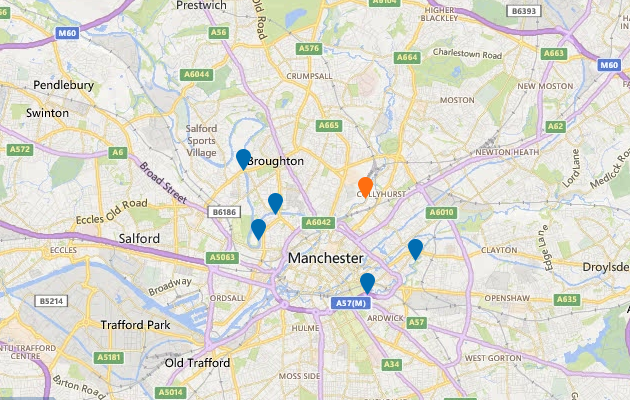

Latest river level information for Irk at Collyhurst Weir
Updated at 9:30am on Wednesday 11 January 2017
River levels for the last 5 days and forecast levels for the next 36 hours at this location
- Highest level on record at this location (1.80m on 26 Dec 2015)
- At this level some property flooding is possible here and in nearby areas (1.50m)
- At this level flooding of low-lying land is possible here and in nearby areas (1.10m)
- 1.8m
- 1.6m
- 1.4m
- 1.2m
- 1.0m
- Sat, 7 Jan
- Sun, 8 Jan
- Mon, 9 Jan
- Tue, 10 Jan
- Wed, 11 Jan
Current time and level
- Recorded level (latest 1.49m)
- Forecast level (highest 1.67m)
What effect could these levels have on nearby areas?
The normal range at this location is 0.05m to 1.10m.
The latest level recorded is 0.90m at 9.00am on Wednesday 11 Jan 2017.
The highest level forecast in the next 36 hours is 0.91m at 9.00pm on Thursday 12 Jan 2017.
Above 1.10m flooding of low-lying land may occur in these areas
Above 1.50m some property flooding may occur in these areas
View a nearby measuring station
Select a marker on the map to view measuring station.

![]()
How might river levels affect flood risk?
How are river levels measured?
How are forecast levels produced?
Your feedback will help us improve this service.